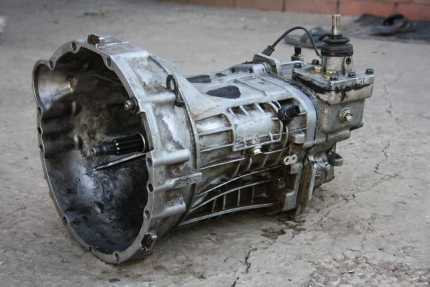
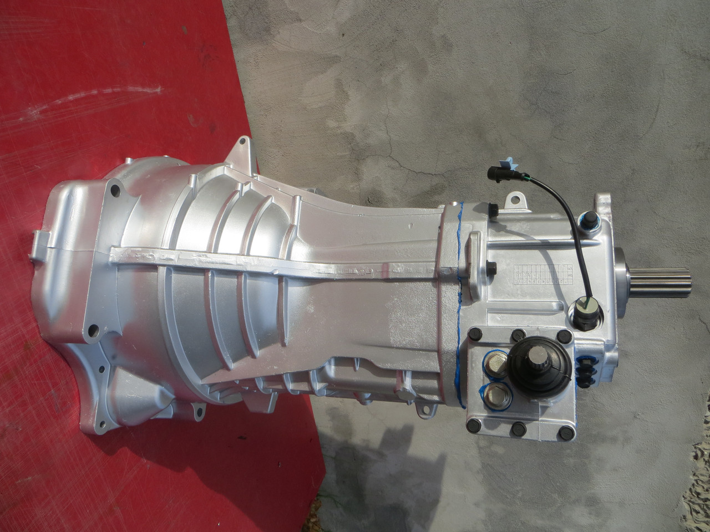

Характеристика:КПП УАЗ 3163 Патриот 5 ст. "DYMOS" дв. IVECO
Производитель DYMOS (Корея)
Каталожный номер 3163-10-1700010-00
Предназначена для установки на автомобили УАЗ Патриот с двигателем Iveco.
Каталожный номер 3163-1700010.
Итальянский турбодизель Iveco F1A устанавливался на УАЗ Патриот с августа 2008-го года. Рабочий объём - 2.3 литра, 116 л/с.
Конструкция:
Механическая, 5-ступенчатая, с синхронизаторами на всех передачах переднего и заднего хода;
Классическая схема переключения передач;
Максимальный передаваемый момент - 410 Нм (32 кгс м);
Усилия при переключении 2-6 кг;
Ресурс - 350 тыс. км;
Периодичность замены масла 25 тыс. км, в случае использования синтетического масла - 40 тыс. км;
Вес 51 кг.